Personas detrás
de los números.
Fuentes y licencias de los retratos. Se muestran recortados y en escala de grises mediante CSS; se conservan los archivos descargados. Para los retratos CC BY-SA, esas adaptaciones visuales se ofrecen bajo la misma licencia del original.
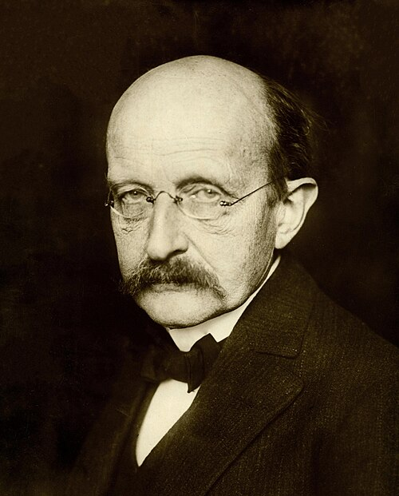
Max Planck
Unknown authorUnknown author · Public domain

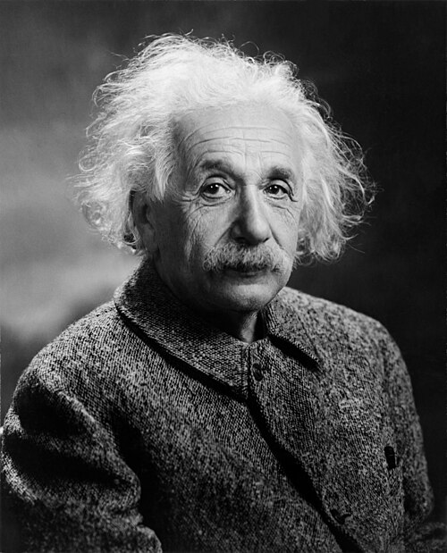


.jpg){kind=link}
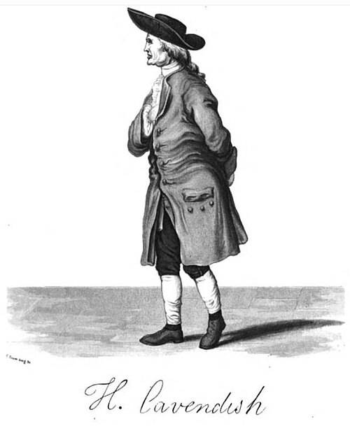

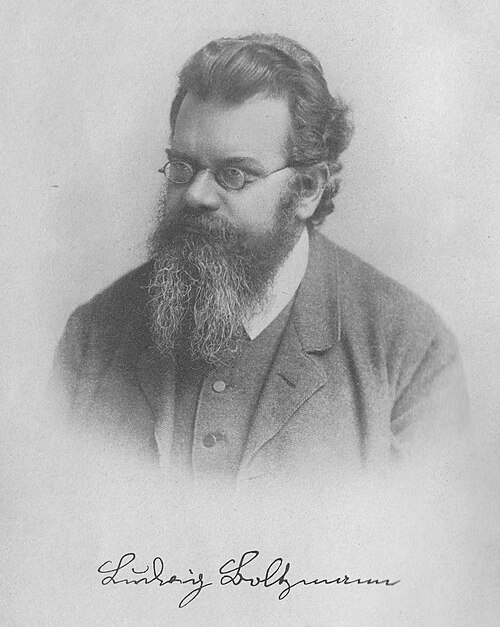
Ludwig Boltzmann
Unknown authorUnknown author · Public domain

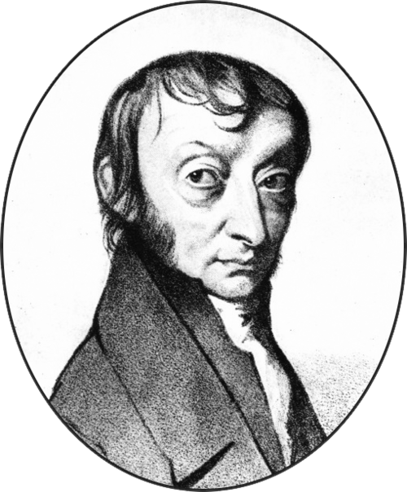
Amedeo Avogadro
The original uploader was Anton at German Wikipedia. · Public domain

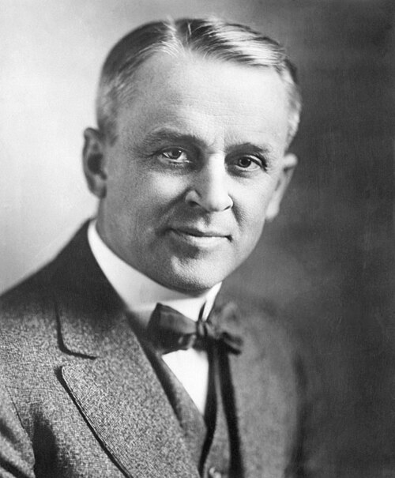


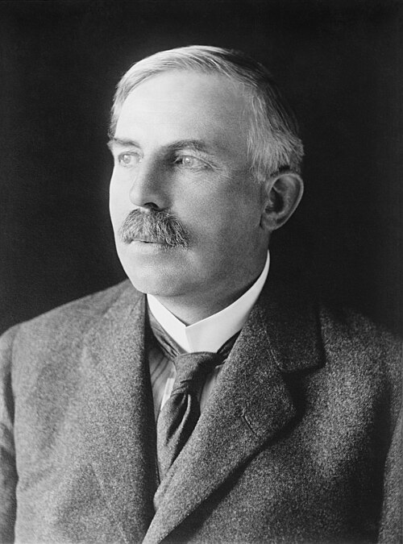
Ernest Rutherford
Bain News Service, publisher Restored by: Bammesk · Public domain

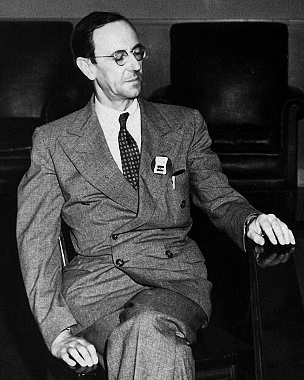
James Chadwick
Los Alamos National Laboratory · Attribution


Johannes Rydberg
sv:Per Bagge (1866–1936) · Public domain
.jpg){kind=link}
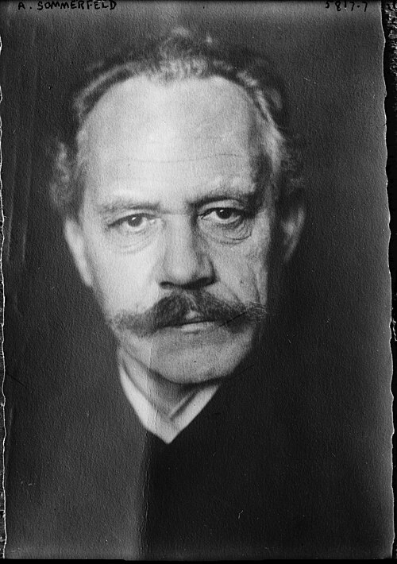
Arnold Sommerfeld
Bain News Service, publisher · Public domain


James Clerk Maxwell
Unknown authorUnknown author · Public domain

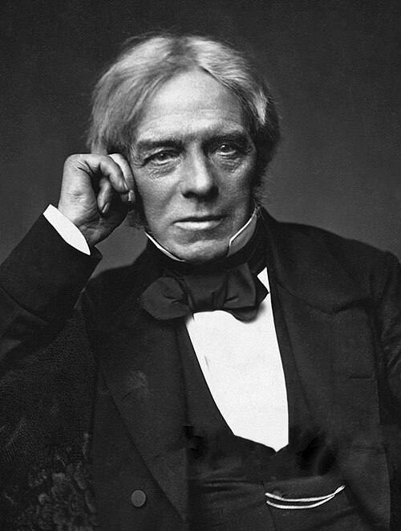
Michael Faraday
Unknown authorUnknown author · Public domain

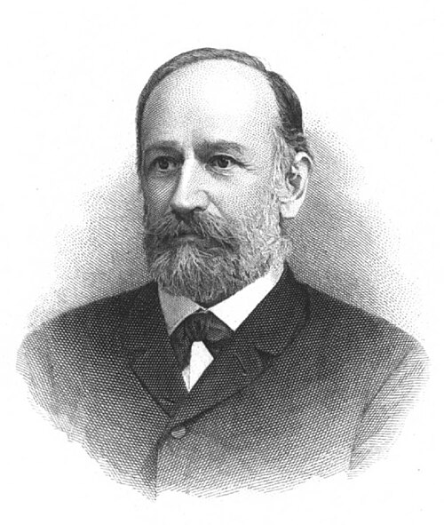

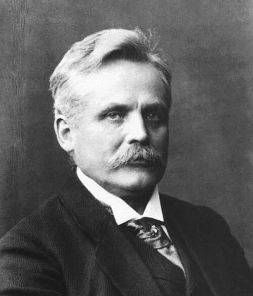


Hippolyte Fizeau
Eugène Pirou (1841-1909) · Public domain


.jpg){kind=link}

John L. Hall
Markus Pössel (User: Mapos) · CC BY-SA 3.0

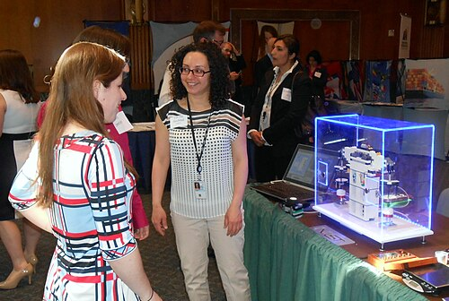
Darine Haddad
NIST / Allan Eustis · Public domain
Archivo original, atribución y condiciones de uso ↗
.jpg){kind=link}
Darine Haddad está en el centro de la fotografía de 2014. No es una fotografía del artículo de 2017.
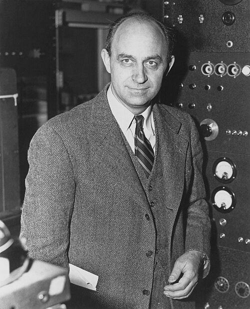
Enrico Fermi
Department of Energy-Office of Public Affairs, restored by Yann · Public domain

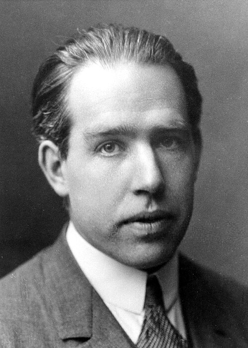
Niels Bohr
The American Institute of Physics credits the photo [1] to AB Lagrelius & Westphal, which is the Swedish company used by the Nobel Foundation for most photos of its book series Les Prix Nobel. · Public domain

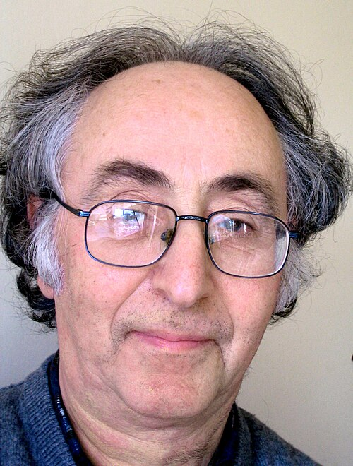

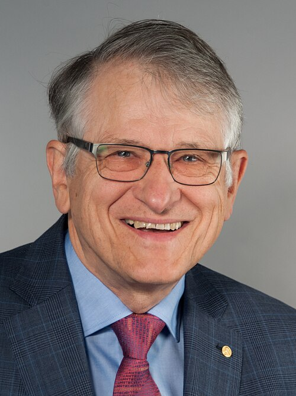
Klaus von Klitzing
Pontifical Academy of Sciences · CC BY-SA 4.0

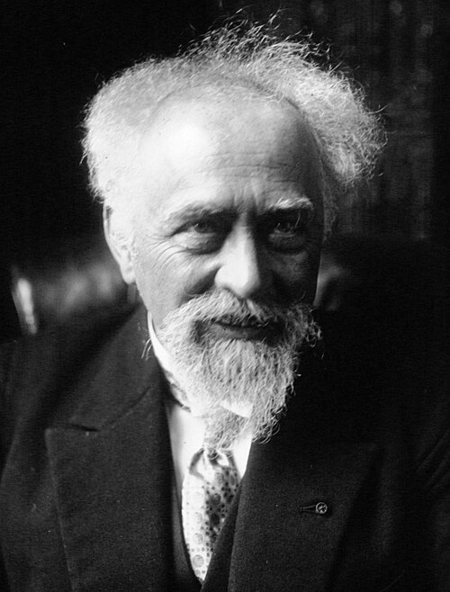
Jean Perrin
Agence de presse Meurisse · Public domain